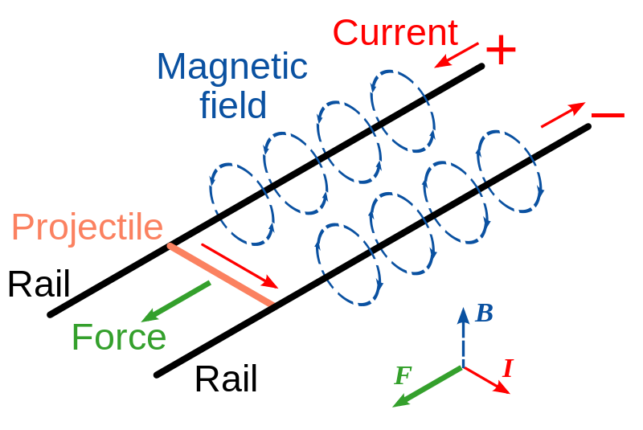

本文不是纯正的科学，其中幻想与科学混杂，请勿用于科学参考。由于本篇脑洞过大，如有不适，请立刻停止阅读，寻找无人的卫生间。
御坂美琴，即炮姐。1
炮姐总结
按照第一篇的经验呢，似乎很多人说读不懂。因此我增加了总结部分，不想读后面的详细内容，可以读完这一部分之后就可以关掉页面了。
- 炮姐电磁炮的原理就是炮姐利用电流产生磁场，然后在硬币内产生的电流在磁场中受到 Lorentz 力的作用，从而被发射出去。
- 炮姐发射一枚硬币所需要的能量最多吃五只半水煮蛋就可以补回来了。如果吃不够呢，可能会产生贫乳。
- 炮姐要解决胸部问题，可以在获得足够好的微操做技能之后，控制胸部新陈代谢，加快脂肪积累。
炮姐原理
按照设定炮姐所控制的是电力，然而由于电与磁的耦合，所以炮姐实际上可以控制电磁场。我们日常生活中绝大多数物理化学生物现象都是电磁场的作用，这从一个侧面体现出炮姐的能力的厉害之处。
电与磁的耦合
这并不需要解释，因为大家都知道 Maxwell 方程组，也就是电磁耦合的方程组。即便不知道这个方程组，也知道我们用的大部分电动机和发电机是利用了电和磁的耦合。
我这里想要解释的是，实际上就物理而言电除了跟磁耦合，还跟引力耦合，也跟弱相互作用2耦合。也就是说，原则上而言，炮姐是可以借助这些耦合来影响引力和弱相互作用的。
然而问题在于，这些耦合都非常弱，倘若要利用电磁场产生巨大的引力，那所需要的能量之巨大显然是难以想象的。
电磁炮是炮姐的招牌攻击。现实生活中，发射电磁炮有几种不同的方式。其中一种是跟炮姐的别名 Railgun 相吻合的，就是电磁轨道炮原理。
除了电磁炮，还有一种理论上而言可行的方式。通过产生向某个方向的 Poynting 流，利用电磁波来推动物体，跟太阳帆的原理是类似的，显然这是一种更加浪费能量的不合理的方式。所以我们假定炮姐发射硬币的原理跟电磁轨道炮一致。
 电磁轨道炮的原理图。来自 Wikipedia:Railgun ，图片为 CC BY-SA 协议，不限制商用，此处沿用该协议。
两根导电轨道，再横着放一根导电轨道上去，这样就构成了一个电磁炮。在两根平行导电轨道上接通电流，这样横向的导电体上面就有了电流，然后由于两根平行轨道上面的电流可以产生磁场，这样一来就有了洛伦兹力，从而可以推动横向导电体运动。
显然电流越大，横向导电体收到的力越大，从而总轨道长度确定的情况下，最终输出能量越大（W=FL），对应于炮弹出口速度越大。
原理上来说，只要我们提供足够的电流和轨道长度，就会具有远大于现在火炮的杀伤力。
更多关于电磁炮的内容可以参考此处。
而在“水之翼”这种招式之中，炮姐可以将空气中大量水分子聚集起来，并且仔细安排电场使得水形成短翼，并且利用水的极性将水喷出，凌空飞行。这是怎么做到的呢？秘密在于水分子是有极性的。这就像磁铁在磁场中受到力的作用一样，极性的水分子在不均匀的电场中也会受到力的作用，因为水分子的两极受到的力不同。所以炮姐只需要产生一个不均匀的电场就可以了。
炮姐“水之翼”招式还有另外的一种解释。假定炮姐放电电人的时候是高压击穿空气，那么要击穿一米的空气需要 1000 千伏这样量级的电压，而炮姐的能力显然是远超过击穿一米空气的。所以炮姐具备产生高压的能力。这样的能力实际上除了能够利用水分子极性来移动分子，还可以电离产生等离子体，从而进行离子推进。或许炮姐在使用这招的时候身后的蓝色火焰就是等离子体产生的。
炮姐绝不是简单的发电机这么简单，她可以对电场进行很有情怀的控制，非常详细地、直接地控制电场分布。
炮姐才不会胖
简单的估算发现炮姐的功率至少可以达到一千兆瓦。这是什么概念呢？这相当于航天飞机飞射功率的十二分之一，或者波音 747 喷气式飞机上一个 GE90 发动机最大功率的十三倍。
此时此刻，你们下一个关心的问题是什么呢？
当然是炮姐要吃多少才能补回来这些使用掉的能量。
炮姐有多能吃
炮姐发射显然是不需要轨道的，她只需要产生两道电流即可。已知炮姐发射的硬币的初速度约为 3 马赫（343*3米每秒≈1000米每秒），假定硬币为七克3，然后假定电导密度还是 0.6 mH/m（这里已经不太合理了，因为炮姐不需要轨道，因此仅为估算），等效轨道长度为一米，我们可以估算炮姐发射这枚硬币需要的电流值 2800 安培，保留量级的话就是说要有一千安培电流这样的量级。
（用电磁学/电动力学）计算结果（Wikipedia:Railgun#Mathematical_formula），横向轨道收到的力为
其中 I 是电流强度，L‘ 是电导线密度（理想情况是 0.6 mH/m）。倘若能够做到稳恒电流，那么质量为 m 的炮弹的加速度就是个恒定值，
根据三角形面积公式，最终速度 v 由下面式子
其中 $S$ 是轨道的长度。
出口速度是
对应的动能是
炮姐作为动能武器，那么显然出口动能越大越好，那么我们就要显著增加电流强度，因为 I 在动能表达式里面是平方的。也可以增加轨道长度。
（真是的，跟前面估计的一样，不需要计算我们显然也知道要增加电流强度和轨道长度嘛。）
使用最理想的电导密度 L′=0.6mH/m，我们可以算一下出口动能（假定长度 10米，电流 1MA），
（看了一篇关于使用电磁炮发射物品到太空的文章：Launch to space with an electromagnetic railgun，里面提到一个实验室里面电磁轨道炮典型的电流值 3.4MA，虽然很难想象这样强大的电流是多么恐怖，这里的计算还是使用了一个典型数值 1MA）
这样我们可以建立一个表格，对于不同质量的物体，其出口速度是多少
| 质量（千克） | 出口速度（马赫） |
| 1 | 226 |
| 5 | 101 |
| 10 | 71 |
| 15 | 58 |
| 30 | 41 |
| 60 | 29 |
即便对于典型的胖子的重量 60kg，依然能够达到约 30 马赫。
没有找到美海军电磁炮的电流值，不过我们可以反推一下，按照这个的数据的话，可能一个典型的电磁炮要长达 10m，出口速度要达到 2500m/s，炮弹重量 15kg。 如果达到出口动能为 15(2500)^2/2= 4.710^7 焦耳的能量，需要的电流（理想电导）是
如果炮姐用的是一样的形式来发射硬币，按照数据，炮姐发射的硬币的速度约为 3 马赫（343*3m/s≈1000m/s），假定硬币为 10g （10^{-2}kg），然后假定电导密度还是 0.6 mH/m（这里已经不合理了，因为炮姐不需要轨道，且不管，因为从画面来看炮姐并不是我们讨论的这种 railgun），等效轨道长度为 1m，我们可以估算炮姐发射这枚硬币需要的电流值
我去，怪不得有人会被烧糊了。为嘛？假定人体电阻为 1000 欧，那么等价于有 4000×1000=4×106伏的电压加在身上。
从画面看，一般的放电时间在秒的量级，就算1秒吧，我们算算有多少能量
因为就算了一秒这也使功率的数值（1.6×10^9W），一个微波率的功率才 1000 W 作用，一盘半斤的五花肉不到 5min 烤熟，那么炮姐这么大功率大约需要 5×60s/106×60×4=0.07s就能把一个 60 kg 的胖子烤熟了。
上面的模型的话，炮姐功率至少可以达到一千兆瓦，而发射时间可以算得是 1/500 秒。这样就是说发射一枚硬币消耗的能量是 2 后面六个零这么多焦耳。这对应于 478 千卡，或者对应于大约五个半水煮蛋的热量了4。
这给出了一个上限，因为炮姐的轨道炮没有导轨消耗，要比我们现实中的轨道炮高效的多。
同时我们也可以看看下限。作为估算，我们忽略轨道炮的能量损耗，仅仅考虑硬币飞出去所需要的能量，并把这部分能量对应成鸡蛋数量。发射一次五百日圆（七克）硬币，如果初速度达到三马赫，也就是对应一千米每秒的初速度，那么这个初动能对应的是三千五百焦耳的能量，对应的不到一千卡。进一步估算的话，炮姐吃一个水煮蛋可以发射大约一百个硬币。
这个下限显然基本上等价于无下限。
结合起来，炮姐发射一枚硬币大约需要一百分之一个鸡蛋到五个半水煮蛋的热量之间。 这样来说的话，炮姐胸部发育不好是不是因为发射硬币导致的能量不足引起的呢？
炮姐升级计划——炮姐核聚变
当我在思考炮姐胸部问题的时候，与致谢中几位聊天时，大家突然提到了炮姐核聚变。那么核聚变可以拯救炮姐的胸部么？
核聚变的发生是需要克服很多困难的，其中比较重要的一个是库仑势垒。设想一堆带正电的质子，他们要相互靠的足够近才能融合在一起（借助量子隧穿）。然而一堆带正电的质子是相互排斥对方的，同性相斥嘛。所以核聚变发生需要克服这个同性相斥的库伦势垒。
然而炮姐是可以安排电场分布的，倘若炮姐借助自己强大的能力，将氢离子分离出来，并且借助磁场将它们束缚在一个区域内。然后（通过叠加电场分布）修改质子核聚变时所需要克服的库伦势垒，使得两个质子更容易相互接近，发生聚变。这样提取出来能量，为自己发射电磁炮所用。倘若合理安排，可以用较少的输入能量获取较多的输出能量，那么炮姐就实现了炮姐核聚变。借助这聚变的能量，发射电磁炮不再需要消耗水煮蛋的热量，那么胸部发育就不再被拖累。
这样，炮姐只需要发射电磁炮之前或之后喝杯水，胸部从此傲人挺立。
炮姐升级计划——专业丰胸塑性
实际上上面实现核聚变要求炮姐具有非常好的微操功底。在足够的练习之后，炮姐的微操做变得足够安全足够准确。那么我们也让炮姐来做一回闪电侠吧。
人体的新陈代谢依赖的还是电磁相互作用，蛋白质折叠，酶的电场分布，氧化还原等等。炮姐仔细对体内的这些过程进行微操做，例如加快电离过程，可以加快或抑制化学反应，从而控制体内代谢的快慢。当然了，计算量如此之大，可能需要 Tree Diagram 的协助了。但原则上可以通过加快新陈代谢做一回闪电侠。
等一下，炮姐这么优雅的身姿，怎么能去做闪电侠呢？炮姐要借此加快胸部脂肪积累，从而达到丰胸的目的。
致谢
炮姐玩引力——没人看的部分
如果我们让炮姐玩引力的话，下面是估算。
这里对应的公式是广义相对论里面的场方程。基本上而言， (ϵ_0 E^22+B^2/μ_0)/2 是能量密度，作为一个估算，我们可以分析一下量纲。结果是如果产生相当于水的引力势能的话，按照量纲估算，需要产生的电场强度为 10^15V/m。而击穿空气所需的电压量级上也不过是 10^6V/m。炮姐要在每立方厘米内产生 1 后面 25 个零这么多焦耳的能量，也就是说，要在一立方厘米之内产生 1 克水相同的效应，炮姐要消耗掉大约 1 后面 21 个零这么多千卡的热量，如果要维持平衡，就要吃掉这么多热量的食物，如果对应的是水煮蛋的话，要吃掉 1 后面 19 个零这么多个鸡蛋。
好撑。5